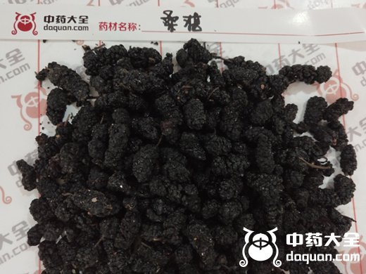
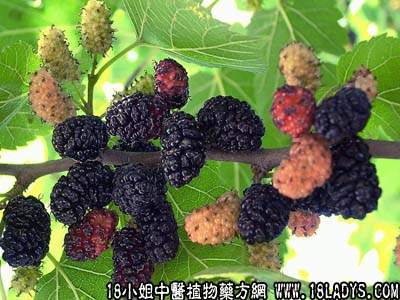

【中药概述】
桑椹子为桑科乔木植物桑树的果穗。甘、寒。归心、肝、肾经。
1．滋阴补血：用于阴亏血虚之眩晕、目眩、耳鸣、失眠、须发早白等证，常配何首乌，旱莲草，女贞子等，如（首乌延寿丹）。
2．润肠通便：用于阴亏血虚之肠燥便秘等，常配火麻仁，生首乌等，以增强疗效。
【药效鉴别】
本品酸而微寒，兼有滋水涵木、清热之效。唯药性平和，少用不易功。
【临证应用】
心血虚或心阴虚（心悸、心烦、五心烦热，可见于神经衰弱，心脏病，可与生地，麦冬，百合，柏子仁，大枣，珍珠母等同用；心烦甚者加朱砂，竹叶）。
【药理作用】
有利尿、镇咳、增强机体抵抗力的作用。
【化学成分】
含糖类、鞣酸、苹果酸，钙、磷、铁、钾，维生素C，胡萝卜素、油酸、亚油酸和硬脂酸等。
【用量用法】
本品9——15g，水煎服，或浸酒、入剂。
【使用注意】
脾虚便溏者不宜。桑椹中含有胰蛋白酶抑制物质，能使肠道内各种消化酶，特别是胰蛋白酶活性减弱，而致消化不良。